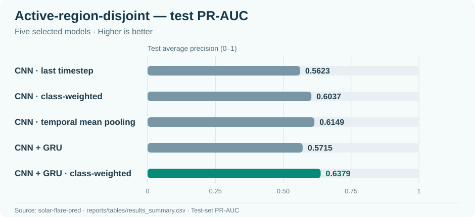
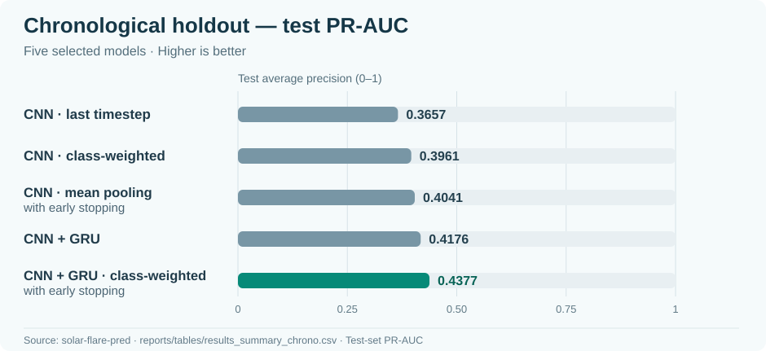

PROJECT 01 / SCIENTIFIC MACHINE LEARNING
Solar Flare
Prediction.
Exploring 24-hour M-class solar-flare forecasting from multimodal observations of solar active regions.
The problem
Solar flares can disrupt satellite operations and radio communication. This capstone investigated whether machine learning could identify the likelihood of an M-class or stronger flare within the next 24 hours for a given solar active region. The task is an imbalanced binary classification problem, so accuracy alone is not an adequate way to assess results.
Data preparation
The project used imagery from NASA’s Solar Dynamics Observatory through the SDOBenchmark dataset: eight AIA extreme-ultraviolet/UV channels plus HMI continuum and magnetogram imagery. Model inputs were organized across four timestamps and ten image modalities, with each image at 256 × 256 resolution.
The data-preparation pipeline checked whether a sample had all required image components before constructing model-ready tensors. The complete-only working index contained 8,310 samples across 1,154 solar active regions, including 625 positive flare examples.
Leakage-resistant evaluation
Observations from the same solar active region can be correlated. To reduce the risk that the model effectively sees the same region in both training and test data, the project used active-region-disjoint splits. Chronological holdout strategies were also investigated to approximate forecasting on later observations.
| Split | Samples | Positive | Regions |
|---|---|---|---|
| Train | 6,704 | 429 | 959 |
| Validation | 807 | 44 | 106 |
| Test | 799 | 152 | 89 |
Model design
The final experimental lineup compared a single-timestep CNN, weighted CNN, temporal mean-pooling CNN, CNN + GRU, and weighted CNN + GRU. The intent was to examine whether adding temporal structure improved the signal extracted from multi-channel image sequences.
4 × 10 × 256 × 256→CNN features→GRU / pooling→Flare likelihood
Verified model results
The final capstone compared selected CNN and CNN–GRU configurations under two evaluation protocols. The values below are test-set results reproduced from the project’s published result tables. The complete CSV files also include additional early-stopping experiments. Here, PR-AUC is reported as average precision (AP); higher is better for PR-AUC and TSS, while lower is better for Brier score.
Weighted CNN + GRU
Weighted CNN + GRU
Weighted CNN + GRU, early stopping
Protocol A: active-region-disjoint test
Solar active regions were kept separate across the training, validation, and test partitions. This tests generalization to regions the model did not observe during training and avoids overlap of region IDs across splits.

| Model | PR-AUC ↑ | TSS ↑ | Brier ↓ |
|---|---|---|---|
| CNN, last timestep | 0.5623 | 0.3570 | 0.1263 |
| CNN + positive weighting | 0.6037 | 0.5446 | 0.2373 |
| CNN + temporal mean pooling | 0.6149 | 0.4607 | 0.1167 |
| CNN + GRU | 0.5715 | 0.5113 | 0.1228 |
| CNN + GRU + positive weighting | 0.6379 | 0.5678 | 0.1849 |
Interpretation: The weighted CNN + GRU achieved the highest PR-AUC and TSS among these five configurations, but its Brier score was worse than the unweighted alternatives. Temporal mean pooling had the lowest Brier score among these five, illustrating that better flare detection does not automatically mean better probability estimates.
Protocol B: chronological holdout
A separate time-based evaluation tested models on later observations. The test distribution and positive-class frequency differ from the active-region-disjoint protocol, so these numbers should not be treated as a direct apples-to-apples measure of deployment performance.

| Model | PR-AUC ↑ | TSS ↑ | Brier ↓ |
|---|---|---|---|
| CNN, last timestep | 0.3657 | 0.5856 | 0.0509 |
| CNN + positive weighting | 0.3961 | 0.6753 | 0.1117 |
| CNN + temporal mean pooling, early stopping | 0.4041 | 0.5911 | 0.0487 |
| CNN + GRU | 0.4176 | 0.6760 | 0.0467 |
| CNN + GRU + positive weighting, early stopping | 0.4377 | 0.6777 | 0.1211 |
Interpretation: The weighted CNN + GRU with early stopping led the selected models in PR-AUC and TSS, while the unweighted CNN + GRU produced the lowest Brier score. The best configuration depends on whether the priority is detecting rare events or producing accurate probability estimates.
Evaluation decisions and limitations
For threshold-dependent TSS, each model’s operating threshold was selected on its validation partition, then applied unchanged to the test set. This prevents selecting a threshold based on test labels. PR-AUC and Brier score provide complementary perspectives on discrimination and probability quality in an imbalanced problem.
This was an academic research pipeline, not an operational solar-flare warning system. Performance depends on the SDOBenchmark dataset, the evaluation protocol, and the prevalence of positive cases. Stronger evidence for operational use would require prospective testing, further calibration analysis, and reliable near-real-time data handling.
Explore the full experiment records: AR-disjoint results CSV ↗ · Chronological results CSV ↗. These files include additional configurations beyond the five displayed in each table. Original plots and an inference walkthrough can be added in a later documentation pass.
What this demonstrates
- Structuring and validating a multimodal scientific dataset
- Designing reproducible experiments with awareness of leakage
- Implementing and comparing CNN and CNN–GRU approaches
- Choosing appropriate metrics for imbalanced classification
- Documenting decisions and limits rather than overstating results